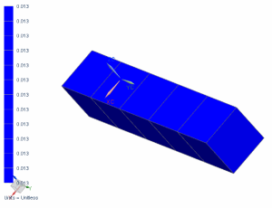

Display the plastic strain after unloading
Display the equivalent plastic strain at the end of the unloading subcase.
 Post-Processing Navigator
Post-Processing Navigator
-

 Removing Loads (expand, if necessary)
Removing Loads (expand, if necessary)
-
Equivalent Plastic Strain - Element-Nodal
-
 Scalar
Scalar

The plastic strain matches the hand-calculated value.
When you finish looking at the results, return to the model.
|
File |
-
Close→ All Parts